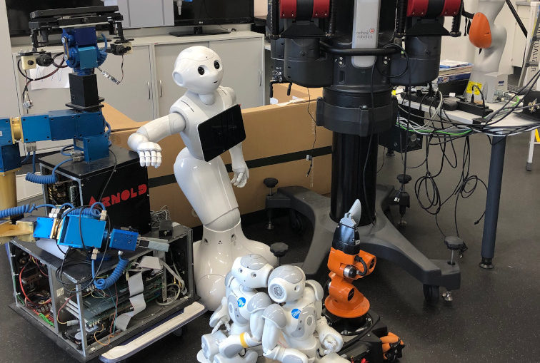

Distributed parallelism¶
Learning outcomes
- I can schedule jobs with distributed parallelism
- I know the basic difference between threads and distributed memory in terms of memory share
- I can explain how Julia/MATLAB/R code makes use of distributed parallelism
Why distributed parallelism is important¶
| Type of parallelism | Number of cores | Number of nodes | Memory | Library |
|---|---|---|---|---|
| Single-threaded | 1 | 1 | As given by operating system | None |
| Threaded/shared memory | Multiple | 1 | Shared by all cores | OpenMP |
| Distributed | Multiple | 1 or Multiple | Distributed | Language package or MPI (Example OpenMPI/MPICH) |
What is distributed parallelism¶
- Although threaded programming is convenient because one can achieve considerable initial speedups with little code modifications, this approach does not scale for more than hundreds of cores.
- Scalability can be achieved with distributed programming.
- Here, there is not a common shared memory but the individual
processes(notice the different terminology withthreadsin shared memory) have their own memory space. - Then, if a process requires data from or should transfer data to another process, it can do that by using
sendandreceiveto transfer messages. - Must be used for a job that use many different nodes, for example, a weather prediction.
- Can also be used within a node.
Types¶
-
A standard API for distributed computing is the Message Passing Interface (MPI). In general, MPI requires refactoring of your code.
- External libraries (loaded as modules on the cluster)
- There are two common versions
- OpenMPI
- MPICH (on Dardel)
-
In the distributed parallelization scheme the workers (processes) can share some common memory but they can also exchange information by sending and receiving messages for instance.
- This is often built-in or written in the actual language (R, MATLAB, Julia
Summary¶
-
Distributed memory
- Tasks doing individual work
- Memory sent “on-demand” between the tasks with rather small “packages”
- Suitable for not very memory-dependent tasks
-
Distributed programming, 2 implementations
- Native language, packages called “distributed” or “parallel” (or similar)
- Message Passing Interface (MPI) relying on external libraries
-
Key words
- tasks
- processes
- workers
Important
- Cores are physical units on a node.
- In some clusters where with “hyperthreading” is activated one can have 2 threads per core
- In theses cases Slurm counts these “sub-cores”
- On a core (physical or hyper) you can define 1 thread (shared memory) or 1 task (distributed memory)
- Hybrid parallelism combines threading and distributed (not covered here)
- Example: One node with 20 cores uses 5 tasks á 4 threads, each thread occupying 1 core.
Read more
- Courses from Aalto University, Finland
- More details for the MPI parallelization scheme in Python can be found in a previous MPI course offered by some of us.
- MATLAB: choose between threads and processes

Arnold (at the left): a robot that was controlled by MPI
How it is used in programming languages of this course?¶
Language-specific nuances for distributed programming
- R doesn’t have a multiprocessing mechanism as the other languages discussed in this course. Some functions provided by certain packages (parallel, doParallel, etc.), for instance, foreach, offer parallel features. The processes generated by these functions have their own workspace which could lead to data replication.
- MPI is supported in R through the
Rmpipackage.
- In Matlab one can use the
parpool('my-cluster',X)where X is the number of workers. The total number of processes spawned will always be X+1 where the extra process handles the overhead for the rest. See the documentation for parpool from MatWorks. - Matlab doesn’t support MPI function calls in Matlab code, it could be used indirectly through mex functions though.
- The mechanism here is called
Julia processeswhich can be activated by executing a script as followsjulia -p X script.jl, where X is the number of processes. Code modifications are required to support the workers. - Julia also supports MPI through the package
MPI.jl.
Packages and syntax
- Packages
- parallel
- doParallel
- Rmpi
- pdbMPI on Dardel
-
Syntax for parallel/doParallel
makeClusterregisterDoParallelforeachstopCluster
-
Some syntax for MPI
mpi.universe
- Syntax
parpoolparclusterparforparfevalspmd
-
Packages
- Distributed (native to Julia)
- Convenient
- Not difficult to code
- SharedArrays
- MPI
- Distributed (native to Julia)
-
Syntax for distributed/shared arrays
- addprocs(nworkers)
- sharedVector
@everywhere@sync@distributed@spawn
Allocating distributed jobs¶
- Use
--ntasks=<number>or-n=<number> - Use
srunif you run a script. - Use
-p <number of processes>together withjuliaorRto start a language shell using having access to several cores. - Use an MPI or “distributed” version of your software: a ‘regular’ non-MPI/distributed version will just run the same command serially but perhaps many times at once!
- Use
mpirunif it is real MPI.
Warning
- Check if the resources that you allocated are being used properly.
- Monitor the usage of hardware resources with tools offered at your HPC center, for instance job-usage at HPC2N.
- Here there are some examples (of many) of what you will need to pay attention when porting a parallel code from your laptop (or another HPC center) to our clusters:
We have a tool to monitor the usage of resources called: job-usage at HPC2N.
If you are in a interactive node session the top command will give you information
of the resources usage.
Exercises¶
Important
Compute allocations in this workshop
- Pelle/Rackham:
uppmax2025-2-360 - Kebnekaise:
hpc2n2025-151 - Cosmos:
lu2025-2-94 - Tetralith:
naiss2025-22-934 - Dardel:
naiss2025-22-934 - Alvis:
naiss2025-22-934
Storage space for this workshop
- Rackham:
/proj/r-matlab-julia-pelle - Kebnekaise:
/proj/nobackup/fall-courses - Tetralith:
/proj/courses-fall-2025/users/ - Dardel:
/cfs/klemming/projects/snic/courses-fall-2025 - Alvis:
/mimer/NOBACKUP/groups/courses-fall-2025/
Running parallel with distributed libraries
In this exercise we will run a parallelized code that performs a 2D integration:
One way to perform the integration is by creating a grid in the x and y directions.
More specifically, one divides the integration range in both directions into n bins.
Here is a parallel code using the Distributed package in Julia (call it
integration2d_distributed.jl):
integration2d_distributed.jl
using Distributed
using SharedArrays
using LinearAlgebra
using Printf
using Dates
# Add worker processes (replace with actual number of cores you want to use)
nworkers = *FIXME*
addprocs(nworkers)
# Grid size
n = 20000
# Number of processes
numprocesses = nworkers
# Shared array to store partial sums for each process
partial_integrals = SharedVector{Float64}(numprocesses)
# Function for 2D integration using multiprocessing
# the decorator @everywher instruct Julia to transfer this function to all workers
@everywhere function integration2d_multiprocessing(n, numprocesses, processindex, partial_integrals)
# Interval size (same for X and Y)
h = π / n
# Cumulative variable
mysum = 0.0
# Workload for each process
workload = div(n, numprocesses)
# Define the range of work for each process according to index
begin_index = workload * (processindex - 1) + 1
end_index = workload * processindex
# Regular integration in the X axis
for i in begin_index:end_index
x = h * (i - 0.5)
# Regular integration in the Y axis
for j in 1:n
y = h * (j - 0.5)
mysum += sin(x + y)
end
end
# Store the result in the shared array
partial_integrals[processindex] = h^2 * mysum
end
# function for main
function main()
# Start the timer
starttime = now()
# Distribute tasks to processes
@sync for i in 1:numprocesses
@spawnat i integration2d_multiprocessing(n, numprocesses, i, partial_integrals)
end
# Calculate the total integral by summing over partial integrals
integral = sum(partial_integrals)
# end timing
endtime = now()
# Output results
println("Integral value is $(integral), Error is $(abs(integral - 0.0))")
println("Time spent: $(Dates.value(endtime - starttime) / 1000) sec")
end
# Run the main function
main()
Run the code with the following batch script.
job.sh
#!/bin/bash -l
#SBATCH -A naiss202X-XY-XYZ # your project_ID
#SBATCH -J job-serial # name of the job
#SBATCH -n *FIXME* # nr. tasks/coresw
#SBATCH --time=00:20:00 # requested time
#SBATCH --error=job.%J.err # error file
#SBATCH --output=job.%J.out # output file
ml julia/1.8.5
julia integration2d_distributed.jl
#!/bin/bash
#SBATCH -A hpc2n202x-xyz # your project_ID
#SBATCH -J job-serial # name of the job
#SBATCH -n *FIXME* # nr. tasks
#SBATCH --time=00:20:00 # requested time
#SBATCH --error=job.%J.err # error file
#SBATCH --output=job.%J.out # output file
ml purge > /dev/null 2>&1
ml Julia/1.9.3-linux-x86_64
julia integration2d_distributed.jl
#!/bin/bash
#SBATCH -A lu202X-XX-XX # your project_ID
#SBATCH -J job-serial # name of the job
#SBATCH -n *FIXME* # nr. tasks
#SBATCH --time=00:20:00 # requested time
#SBATCH --error=job.%J.err # error file
#SBATCH --output=job.%J.out # output file
# reservation (optional)
#SBATCH --reservation=RPJM-course*FIXME*
ml purge > /dev/null 2>&1
ml Julia/1.9.3-linux-x86_64
julia integration2d_distributed.jl
#!/bin/bash
#SBATCH -A naiss202t-uv-wxyz # your project_ID
#SBATCH -J job # name of the job
#SBATCH -p shared # name of the queue
#SBATCH --ntasks=*FIXME* # nr. of tasks
#SBATCH --cpus-per-task=1 # nr. of cores per-task
#SBATCH --time=00:03:00 # requested time
#SBATCH --error=job.%J.err # error file
#SBATCH --output=job.%J.out # output file
# Load dependencies and Julia version
ml PDC/23.12 julia/1.10.2-cpeGNU-23.12
julia integration2d_distributed.jl
```bash
#!/bin/bash
#SBATCH -A naiss202t-uv-xyz # your project_ID
#SBATCH -J job-serial # name of the job
#SBATCH -n *FIXME* # nr. tasks
#SBATCH --time=00:20:00 # requested time
#SBATCH --error=job.%J.err # error file
#SBATCH --output=job.%J.out # output file
# Load any modules you need, here for Julia
ml julia/1.9.4-bdist
julia integration2d_distributed.jl
```
Try different number of cores for this batch script (FIXME string) using the sequence: 1, 2, 4, 8, 12, and 14. Note: this number should match the number of processes (also a FIXME string) in the Julia script. Collect the timings that are printed out in the job.*.out. According to these execution times what would be the number of cores that gives the optimal (fastest) simulation?
Challenge: Increase the grid size (n) to 100000 and submit the batch job with 4 workers (in the
Julia script) and request 5 cores in the batch script. Monitor the usage of resources
with tools available at your center, for instance top (UPPMAX) or
job-usage (HPC2N).
Here is a parallel code using the parallel and doParallel packages in R (call it
integration2d.R). Note: check if those packages are already installed for the required
R version, otherwise install them with install.packages(). The recommended R version
for this exercise is ml GCC/12.2.0 OpenMPI/4.1.4 R/4.2.2 (HPC2N).
integration2d.R
library(parallel)
library(doParallel)
# nr. of workers/cores that will solve the tasks
nworkers <- *FIXME*
# grid size
n <- 840
# Function for 2D integration (non-optimal implementation)
integration2d <- function(n, numprocesses, processindex) {
# Interval size (same for X and Y)
h <- pi / n
# Cumulative variable
mysum <- 0.0
# Workload for each process
workload <- floor(n / numprocesses)
# Define the range of work for each process according to index
begin_index <- workload * (processindex - 1) + 1
end_index <- workload * processindex
# Regular integration in the X axis
for (i in begin_index:end_index) {
x <- h * (i - 0.5)
# Regular integration in the Y axis
for (j in 1:n) {
y <- h * (j - 0.5)
mysum <- mysum + sin(x + y)
}
}
# Return the result
return(h^2 * mysum)
}
# Set up the cluster for doParallel
cl <- makeCluster(nworkers)
registerDoParallel(cl)
# Start the timer
starttime <- Sys.time()
# Distribute tasks to processes and combine the outputs into the results list
results <- foreach(i = 1:nworkers, .combine = c) %dopar% { integration2d(n, nworkers, i) }
# Calculate the total integral by summing over partial integrals
integral <- sum(results)
# End the timing
endtime <- Sys.time()
# Print out the result
print(paste("Integral value is", integral, "Error is", abs(integral - 0.0)))
print(paste("Time spent:", difftime(endtime, starttime, units = "secs"), "seconds"))
# Stop the cluster after computation
stopCluster(cl)
Run the code with the following batch script.
job.sh
#!/bin/bash -l
#SBATCH -A naiss202u-wv-xyz # your project_ID
#SBATCH -J job-serial # name of the job
#SBATCH -n *FIXME* # nr. tasks/coresw
#SBATCH --time=00:20:00 # requested time
#SBATCH --error=job.%J.err # error file
#SBATCH --output=job.%J.out # output file
ml R_packages/4.1.1
Rscript --no-save --no-restore integration2d.R
#!/bin/bash
#SBATCH -A hpc2n202w-xyz # your project_ID
#SBATCH -J job-serial # name of the job
#SBATCH -n *FIXME* # nr. tasks
#SBATCH --time=00:20:00 # requested time
#SBATCH --error=job.%J.err # error file
#SBATCH --output=job.%J.out # output file
ml purge > /dev/null 2>&1
ml GCC/12.2.0 OpenMPI/4.1.4 R/4.2.2
Rscript --no-save --no-restore integration2d.R
=== “LUNARC
```sh
#!/bin/bash
#SBATCH -A lu202u-wy-yz # your project_ID
#SBATCH -J job-serial # name of the job
#SBATCH -n *FIXME* # nr. tasks
#SBATCH --time=00:20:00 # requested time
#SBATCH --error=job.%J.err # error file
#SBATCH --output=job.%J.out # output file
#SBATCH --reservation=RPJM-course*FIXME* # reservation (optional)
ml purge > /dev/null 2>&1
ml GCC/11.3.0 OpenMPI/4.1.4 R/4.2.1
Rscript --no-save --no-restore integration2d.R
```
=== “PDC
```bash
#!/bin/bash
#SBATCH -A naiss202t-uv-wxyz # your project_ID
#SBATCH -J job # name of the job
#SBATCH -p shared # name of the queue
#SBATCH --ntasks=*FIXME* # nr. of tasks
#SBATCH --cpus-per-task=1 # nr. of cores per-task
#SBATCH --time=00:03:00 # requested time
#SBATCH --error=job.%J.err # error file
#SBATCH --output=job.%J.out # output file
# Load dependencies and R version
ml ...
Rscript --no-save --no-restore integration2d.R
```
=== “NSC
```bash
#!/bin/bash
#SBATCH -A naiss202t-uv-xyz # your project_ID
#SBATCH -J job-serial # name of the job
#SBATCH -n *FIXME* # nr. tasks
#SBATCH --time=00:20:00 # requested time
#SBATCH --error=job.%J.err # error file
#SBATCH --output=job.%J.out # output file
# Load any modules you need, here for R
ml R/4.4.0-hpc1-gcc-11.3.0-bare
Rscript --no-save --no-restore integration2d.R
```
Try different number of cores for this batch script (FIXME string) using the sequence: 1,2,4,8,12, and 14. Note: this number should match the number of processes (also a FIXME string) in the R script. Collect the timings that are printed out in the job.*.out. According to these execution times what would be the number of cores that gives the optimal (fastest) simulation?
Challenge: Increase the grid size (n) to 10000 and submit the batch job with 4 workers (in the
R script) and request 5 cores in the batch script. Monitor the usage of resources
with tools available at your center, for instance top (UPPMAX) or
job-usage (HPC2N).
Here is a parallel code using the parfor tool from Matlab (call it
integration2d.m).
integration2d.m
% Number of workers/processes
num_workers = *FIXME*;
% Use parallel pool with 'parfor'
parpool('profile-name',num_workers); % Start parallel pool with num_workers workers
% Grid size
n = 6720;
% bin size
h = pi / n;
tic; % Start timer
% Shared variable to collect partial sums
partial_integrals = 0.0;
% In Matlab one can use parfor to parallelize loops
parfor i = 1:n
partial_integrals = partial_integrals + integration2d_partial(n,i);
end
% Compute the integrals by multilpying by the bin size
integral = partial_integrals * h^2;
elapsedTime = toc; % Stop timer
fprintf("Integral value is %e\n", integral);
fprintf("Error is %e\n", abs(integral - 0.0));
fprintf("Time spent: %.2f sec\n", elapsedTime);
% Clean up the parallel pool
delete(gcp('nocreate'));
% Function for the 2D integration only computes a single bin
function mysum = integration2d_partial(n,i)
% bin size
h = pi / n;
% Partial summation
mysum = 0.0;
% A single bin is computed
x = h * (i - 0.5);
% Regular integration in the Y axis
for j = 1:n
y = h * (j - 0.5);
mysum = mysum + sin(x + y);
end
end
You can run directly this script from the Matlab GUI. Try different number of cores for this batch script (FIXME string) using the sequence: 1, 2, 4, 8, 12, and 14. Collect the timings that are printed out in the Matlab command window. According to these execution times what would be the number of cores that gives the optimal (fastest) simulation?
Challenge: Increase the grid size (n) to 100000 and submit the batch job with 4 workers.
Monitor the usage of resources with tools available at your center, for instance top (UPPMAX),
job-usage (HPC2N), or if you’re working in the GUI (e.g. on LUNARC), you can click Parallel
and then Monitor Jobs. For job-usage, you can see the job ID if you type squeue --me on a terminal on Kebnekaise.
Extra exercises covering MPI¶
Julia: Find the difference in coding¶
In this exercise we will run a parallelized code that performs the 2D integration used above:
- Note the differences in writing the code
- MPI usually needs more rewriting
Julia scripts
# nr. of grid points
n = 100000
function integration2d_julia(n)
# interval size
h = π/n
# cummulative variable
mysum = 0.0
# regular integration in the X axis
for i in 0:n-1
x = h*(i+0.5)
# regular integration in the Y axis
for j in 0:n-1
y = h*(j + 0.5)
mysum = mysum + sin(x+y)
end
end
return mysum*h*h
end
res = integration2d_julia(n)
println(res)
using .Threads
# nr. of grid points
n = 100000
# nr. of threads
numthreads = nthreads()
# array for storing partial sums from threads
partial_integrals = zeros(Float64, numthreads)
function integration2d_julia_threaded(n,numthreads,threadindex)
# interval size
h = π/convert(Float64,n)
# cummulative variable
mysum = 0.0
# workload for each thread
workload = convert(Int64, n/numthreads)
# lower and upper integration limits for each thread
lower_lim = workload * (threadindex - 1)
upper_lim = workload * threadindex -1
## regular integration in the X axis
for i in lower_lim:upper_lim
x = h*(i + 0.5)
# regular integration in the Y axis
for j in 0:n-1
y = h*(j + 0.5)
mysum = mysum + sin(x+y)
end
end
partial_integrals[threadindex] = mysum*h*h
return
end
# The threads can compute now the partial summations
@threads for i in 1:numthreads
integration2d_julia_threaded(n,numthreads,threadid())
end
# The main thread now reduces the array
total_sum = sum(partial_integrals)
println("The integral value is $total_sum")
@everywhere begin
using Distributed
using SharedArrays
end
# nr. of grid points
n = 100000
# nr. of workers
numworkers = nworkers()
# array for storing partial sums from workers
partial_integrals = SharedArray( zeros(Float64, numworkers) )
@everywhere function integration2d_julia_distributed(n,numworkers,workerid,A::SharedArray)
# interval size
h = π/convert(Float64,n)
# cummulative variable
mysum = 0.0
# workload for each worker
workload = convert(Int64, n/numworkers)
# lower and upper integration limits for each thread
lower_lim = workload * (workerid - 2)
upper_lim = workload * (workerid - 1) -1
# regular integration in the X axis
for i in lower_lim:upper_lim
x = h*(i + 0.5)
# regular integration in the Y axis
for j in 0:n-1
y = h*(j + 0.5)
mysum = mysum + sin(x+y)
end
end
A[workerid-1] = mysum*h*h
return
end
# The workers can compute now the partial summations
@sync @distributed for i in 1:numworkers
integration2d_julia_distributed(n,numworkers,myid(),partial_integrals)
end
# The main process now reduces the array
total_sum = sum(partial_integrals)
println("The integral value is $total_sum")
using MPI
MPI.Init()
# Initialize the communicator
comm = MPI.COMM_WORLD
# Get the ranks of the processes
rank = MPI.Comm_rank(comm)
# Get the size of the communicator
size = MPI.Comm_size(comm)
# root process
root = 0
# nr. of grid points
n = 100000
function integration2d_julia_mpi(n,numworkers,workerid)
# interval size
h = π/convert(Float64,n)
# cummulative variable
mysum = 0.0
# workload for each worker
workload = div(n,numworkers)
# lower and upper integration limits for each thread
lower_lim = workload * workerid
upper_lim = workload * (workerid + 1) -1
# regular integration in the X axis
for i in lower_lim:upper_lim
x = h*(i + 0.5)
# regular integration in the Y axis
for j in 0:n-1
y = h*(j + 0.5)
mysum = mysum + sin(x+y)
end
end
partial_integrals = mysum*h*h
return partial_integrals
end
# The workers can compute now the partial summations
p = integration2d_julia_mpi(n,size,rank)
# The root process now reduces the array
integral = MPI.Reduce(p,+,root, comm)
if rank == root
println("The integral value is $integral")
end
MPI.Finalize()
Batch scripts
The corresponding batch scripts for these examples are given here:
#!/bin/bash
#SBATCH -A naiss202t-uv-wxyz
#SBATCH -J job
#SBATCH -n 8
#SBATCH --time=00:10:00
#SBATCH --error=job.%J.err
#SBATCH --output=job.%J.out
ml julia/1.8.5
ml gcc/11.3.0 openmpi/4.1.3
# "time" command is optional
# export the PATH of the Julia MPI wrapper
export PATH=~/.julia/bin:$PATH
time mpiexecjl -np 8 julia mpi.jl
#!/bin/bash
#SBATCH -A hpc2n202w-xyz
#SBATCH -J job
#SBATCH -n 8
#SBATCH --time=00:10:00
#SBATCH --error=job.%J.err
#SBATCH --output=job.%J.out
ml purge > /dev/null 2>&1
ml Julia/1.8.5-linux-x86_64
ml foss/2021b
# export the PATH of the Julia MPI wrapper
export PATH=/home/u/username/.julia/bin:$PATH
time mpiexecjl -np 8 julia mpi.jl
#!/bin/bash
#SBATCH -A lu202w-x-yz
#SBATCH -J job
#SBATCH -n 8
#SBATCH --time=00:10:00
#SBATCH --error=job.%J.err
#SBATCH --output=job.%J.out
ml purge > /dev/null 2>&1
ml Julia/1.8.5-linux-x86_64
ml foss/2021b
# export the PATH of the Julia MPI wrapper
export PATH=/home/u/username/.julia/bin:$PATH
time mpiexecjl -np 8 julia mpi.jl
#!/bin/bash
#SBATCH -A naiss202t-uv-wxyz # your project_ID
#SBATCH -J job # name of the job
#SBATCH -p shared # name of the queue
#SBATCH --ntasks=1 # nr. of tasks
#SBATCH --cpus-per-task=1 # nr. of cores per-task
#SBATCH --time=00:03:00 # requested time
#SBATCH --error=job.%J.err # error file
#SBATCH --output=job.%J.out # output file
# Load dependencies and Julia version
ml PDC/23.12 julia/1.10.2-cpeGNU-23.12
# "time" command is optional
time julia serial.jl
#!/bin/bash
#SBATCH -A naiss202t-uv-wxyz # your project_ID
#SBATCH -J job # name of the job
#SBATCH -p shared # name of the queue
#SBATCH --ntasks=1 # nr. of tasks
#SBATCH --cpus-per-task=8 # nr. of cores per-task
#SBATCH --time=00:03:00 # requested time
#SBATCH --error=job.%J.err # error file
#SBATCH --output=job.%J.out # output file
# Load dependencies and Julia version
ml PDC/23.12 julia/1.10.2-cpeGNU-23.12
# "time" command is optional
time julia -t 8 threaded.jl
#!/bin/bash
#SBATCH -A naiss202t-uv-wxyz # your project_ID
#SBATCH -J job # name of the job
#SBATCH -p shared # name of the queue
#SBATCH --ntasks=1 # nr. of tasks
#SBATCH --cpus-per-task=8 # nr. of cores per-task
#SBATCH --time=00:03:00 # requested time
#SBATCH --error=job.%J.err # error file
#SBATCH --output=job.%J.out # output file
# Load dependencies and Julia version
ml PDC/23.12 julia/1.10.2-cpeGNU-23.12
# "time" command is optional
time julia -p 8 distributed.jl
#!/bin/bash
#SBATCH -A naiss202t-uv-wxyz # your project_ID
#SBATCH -J job # name of the job
#SBATCH -p shared # name of the queue
#SBATCH --ntasks=8 # nr. of tasks
#SBATCH --cpus-per-task=1 # nr. of cores per-task
#SBATCH --time=00:03:00 # requested time
#SBATCH --error=job.%J.err # error file
#SBATCH --output=job.%J.out # output file
# Load dependencies and Julia version
ml PDC/23.12 julia/1.10.2-cpeGNU-23.12
# export the PATH of the Julia MPI wrapper
export PATH=/cfs/klemming/home/u/username/.julia/bin:$PATH
time mpiexecjl -np 8 julia mpi.jl
#!/bin/bash
#SBATCH -A naiss202t-uv-wxyz # your project_ID
#SBATCH -J job # name of the job
#SBATCH -n 1 # nr. of tasks
#SBATCH --time=00:03:00 # requested time
#SBATCH --error=job.%J.err # error file
#SBATCH --output=job.%J.out # output file
# Load dependencies and Julia version
ml julia/1.9.4-bdist
# "time" command is optional
time julia serial.jl
#!/bin/bash
#SBATCH -A naiss202t-uv-wxyz # your project_ID
#SBATCH -J job # name of the job
#SBATCH -n 8 # nr. of tasks
#SBATCH --time=00:03:00 # requested time
#SBATCH --error=job.%J.err # error file
#SBATCH --output=job.%J.out # output file
# Load dependencies and Julia version
ml julia/1.9.4-bdist
# "time" command is optional
time julia -t 8 threaded.jl
#!/bin/bash
#SBATCH -A naiss202t-uv-wxyz # your project_ID
#SBATCH -J job # name of the job
#SBATCH -n 8 # nr. of tasks
#SBATCH --time=00:03:00 # requested time
#SBATCH --error=job.%J.err # error file
#SBATCH --output=job.%J.out # output file
# Load dependencies and Julia version
ml julia/1.9.4-bdist
# "time" command is optional
time julia -p 8 distributed.jl
#!/bin/bash
#SBATCH -A naiss202t-uv-wxyz # your project_ID
#SBATCH -J job # name of the job
#SBATCH -n 8 # nr. of tasks
#SBATCH --time=00:03:00 # requested time
#SBATCH --error=job.%J.err # error file
#SBATCH --output=job.%J.out # output file
# Load dependencies and Julia version
ml buildtool-easybuild/4.8.0-hpce082752a2 foss/2023b
ml julia/1.9.4-bdist
# export the PATH of the Julia MPI wrapper
export PATH=/home/username/.julia/bin:$PATH
time mpiexecjl -np 8 julia mpi.jl
R: RMPI¶
RMPI
Short parallel example using package “Rmpi” (“pbdMPI on Dardel”)
Short parallel example (using package “Rmpi”, so we need to load both the module R/4.4.2-gfbf-2024a and the module R-bundle-CRAN/2024.11-foss-2024a. A suitable openmpi module, OpenMPI/5.0.3-GCC-13.3.0, is loaded with these.)
#!/bin/bash -l
#SBATCH -A uppmax2025-2-360
#Asking for 10 min.
#SBATCH -t 00:10:00
#SBATCH -n 8
export OMPI_MCA_mpi_warn_on_fork=0
export OMPI_MCA_btl_openib_allow_ib=1
ml purge > /dev/null 2>&1
ml R/4.4.2-gfbf-2024a
ml OpenMPI/5.0.3-GCC-13.3.0 R-bundle-CRAN/2024.11-foss-2024a R-bundle-Bioconductor/3.20-foss-2024a-R-4.4.2
mpirun -np 1 R CMD BATCH --no-save --no-restore Rmpi.R output.out
Short parallel example (using packages “Rmpi”). Loading R/4.4.1 and its prerequisites, as well as R-bundle-CRAN/2024.06 and its prerequisites.
Short parallel example (using packages “Rmpi”). Loading R/4.2.1 and its prerequisites.
Short parallel example (using packages “pbdMPI as “Rmpi” does not work correctly on NSC). Loading R/4.2.2.
Note: for NSC you first need to install “pdbMPI” (module load R/4.2.2-hpc1-gcc-11.3.0-bare, start R, install.packages('pbdMPI'), pick CRAN mirror (Denmark, Finland, Sweden or other closeby))
Short parallel example (using packages “pbdMPI”). Loading R/4.4.1.
Note: for PDC you first need to install “pbdMPI” (“Rmpi” does not work).
- You can find the tarball in
/cfs/klemming/projects/supr/courses-fall-2025/pbdMPI_0.5-4.tar.gz. - Copy it to your own subdirectory under the project directory and then do:
module load PDC/24.11 R/4.4.2-cpeGNU-24.11R CMD INSTALL pbdMPI_0.5-4.tar.gz --configure-args=" --with-mpi-include=/opt/cray/pe/mpich/8.1.28/ofi/gnu/12.3/include --with-mpi-libpath=/opt/cray/pe/mpich/8.1.28/ofi/gnu/12.3/lib --with-mpi-type=MPICH2" --no-test-load
#!/bin/bash -l
#SBATCH -A naiss2025-22-934
# Asking for 10 min.
#SBATCH -t 00:10:00
#SBATCH --nodes 2
#SBATCH --ntasks-per-node=8
#SBATCH -p main
#SBATCH --output=pbdMPI-test_%J.out
# If you do ml purge you also need to restore the preloaded modules which you should have saved
# when you logged in. Otherwise leave the two following lines outcommented.
#ml purge > /dev/null 2>&1
#ml restore preload
ml PDC/24.11
ml R/4.4.2-cpeGNU-24.11
srun -n 4 Rscript pbdMPI.R
This R script uses package “Rmpi”.
# Load the R MPI package if it is not already loaded.
if (!is.loaded("mpi_initialize")) {
library("Rmpi")
}
print(mpi.universe.size())
ns <- mpi.universe.size() - 1
mpi.spawn.Rslaves(nslaves=ns)
#
# In case R exits unexpectedly, have it automatically clean up
# resources taken up by Rmpi (slaves, memory, etc...)
.Last <- function(){
if (is.loaded("mpi_initialize")){
if (mpi.comm.size(1) > 0){
print("Please use mpi.close.Rslaves() to close slaves.")
mpi.close.Rslaves()
}
print("Please use mpi.quit() to quit R")
.Call("mpi_finalize")
}
}
# Tell all slaves to return a message identifying themselves
mpi.remote.exec(paste("I am",mpi.comm.rank(),"of",mpi.comm.size(),system("hostname",intern=T)))
# Test computations
x <- 5
x <- mpi.remote.exec(rnorm, x)
length(x)
x
# Tell all slaves to close down, and exit the program
mpi.close.Rslaves()
mpi.quit()
This R script uses package “pbdMPI”.
library(pbdMPI)
ns <- comm.size()
# Tell all R sessions to return a message identifying themselves
id <- comm.rank()
ns <- comm.size()
host <- system("hostname", intern = TRUE)
comm.cat("I am", id, "on", host, "of", ns, "\n", all.rank = TRUE)
# Test computations
x <- 5
x <- rnorm(x)
comm.print(length(x))
comm.print(x, all.rank = TRUE)
finalize()
Send the script to the batch system:
MATLAB: parfor and parfeval¶
Challenge 1. Create and run a parallel code
We have the following code in MATLAB that generates an array of 10000 random numbers and then the sum of all elements is stored in a variable called s:
We want now to repeat these steps (generating the numbers and taking the sum) 6 times so that the steps are run at the same time. Use parfor to parallelize these steps. Once your code is parallelized enclose it in a parpool section and send the job to the queue.
Solution
% Nr. of workers
nworkers = 6;
% Use parallel pool with 'parfor'
parpool('name-of-your-cluster',nworkers); % Start parallel pool with nworkers workers
myarray = []; % Optional in this exercise to store partial results
parfor i=1:nworkers
r = rand(1,10000);
s = sum(r);
myarray = [myarray,s];
end
myarray % print out the results from the workers
% Clean up the parallel pool
delete(gcp('nocreate'));
Challenge 2. Run a parallel code with batch MATLAB function
The following function uses parfeval to do some computation (specifically it takes the average per-column of a matrix with a size nsize equal to 1000):
Place this function in a file called parfeval_mean.m and submit this function with the MATLAB batch command.